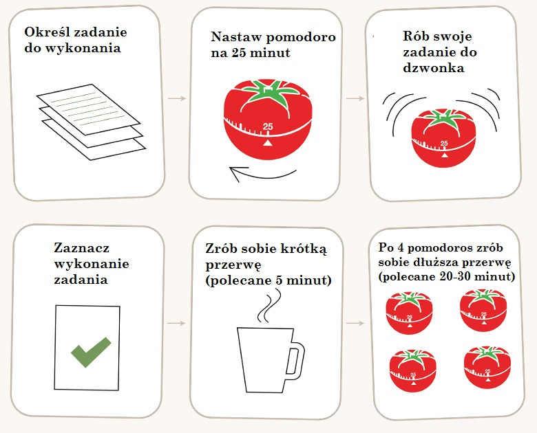

Technika Pomodoro
Stosuj krótkie cykle do nauki
 Technika pomodoro to sposób nauki, w którym dzielimy przeznaczony czas na krótkie sesje 20-25min. Wyłącz wszelkie powiadomienia, rozpraszacze i skup się tylko na danym materiale do przyswojenia. Po fazie "skupienia" następuje przerwa 5min na relaks i rozprostowanie kości. Nastepnie wracamy do cyklu nauki. Po czterech cyklach nauki nalezy sobie zrobić dłuższa przerwe.